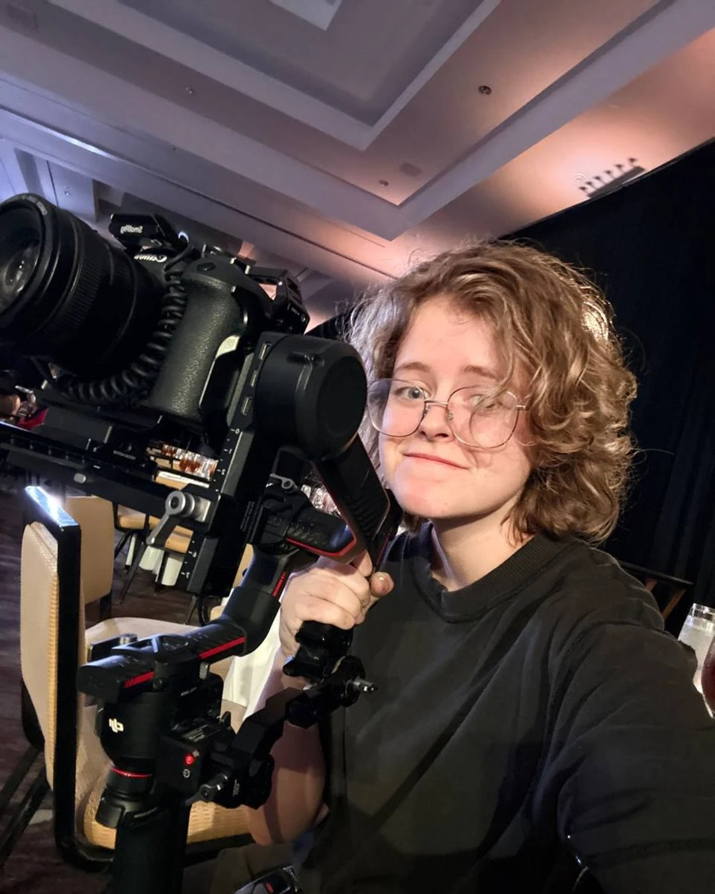

Alisa
Akimova
Every month for your business. Or once, for your project.
Films.
Tap one. Sound on.
Stills.
Tap a cover, swipe through.
For businesses.
On the runway.
Tap one.
Behind the scenes.
The plan is locked before I arrive. On the day we film it in order, talk, laugh, take breaks. I bring the coffee.
Business owners: this part is for you.
Every month I plan it, film it, cut it, post it, and watch what works. You show up and say yes or no.
You run your business. I run your page.
Hate the camera? Then we don't put you on camera. Your work goes on instead.
You talk. I do the rest.
Builders, realtors, dealers, designers. You talk about your work. I ask the questions, film it, and cut out the ums.
Mark of Adler Builders · three videos from one month · tap one, sound on
Your product. Your place.
Stills.
Tap a cover, swipe through.
Five things owners ask me.
I don't have time for content.
Good. You don't need any. Every month I plan it, film it, cut it, post it, and watch what works. You show up and say yes or no.
I hate being on camera.
Most people do, until we start talking. My job is to calm you down and be nice so you act natural. If you truly hate it, we don't put you on camera.
Does this bring customers?
It brings trust. People might not buy a house from a Reel, but the videos prove you know your stuff. When they call, you're not a stranger.
I tried posting. It died in two weeks.
That's why it's monthly. Shoot days every month, I come to you. Something new on your page all month, with stories in between.
What does it cost?
Depends on how many shoot days you want. I tell you on a 15-minute call.
You run your business. I run your page.
What a month looks like.
I film it, cut it, post it. You run your business.
Three steps.
Text or call. 15 minutes about your business.
One paid shoot, about 4 hours. You keep the videos.
Like them? We keep going. That shoot counts toward your first month.
- The first shoot is paid. The videos are yours either way.
- You don't sign up for the month until you've seen your own videos.
Shoots booked one at a time add up. Over time, the month comes out ahead.
You show up. I do the rest.
Not ready to talk?
Leave your Instagram and email. I'll send a short video with ideas for your page.
A project is personal. A photo shoot, a film, a batch of reels and photos. Not only for designers.
I bring the plan and the equipment. You bring the idea, we make a masterpiece.
If it's for reach, I care about the script and the numbers. If it's art, I care about the process and the look.
Fashion films.
Eddy by Eddie, Nobelle and Jhonatan Salic. Tap one. Sound on.
On the runway.
Tap one.
Stills.
Tap a cover, swipe through.
What a shoot with me looks like.
The plan is locked before I arrive. On the day we film it in order, talk, laugh, take breaks. I bring the coffee.
A project, explained.
What it can be
- A fashion film or a brand film, from the plan to the last cut.
- A batch of reels for a brand, a model or an influencer, cut for the phone.
- On the go all day: vlogs, events, the runway. I hold the camera, the light and the mic.
- Photos too: on their own, or from the same day.
- Half a day or a full day. Bigger shoots run six to eight hours.
- You get the films and the photos, graded, yours to keep.
Text or call. 15 minutes about the idea.
I write the plan: place, time of day, shot list. Locked before I arrive.
We shoot. You get the films and the photos.
Book one when you need one.
Behind the camera.

I call or text back.
The same day. Half an idea is enough. Text it to me. Tell me what you do. I'll tell you what we'd film first.